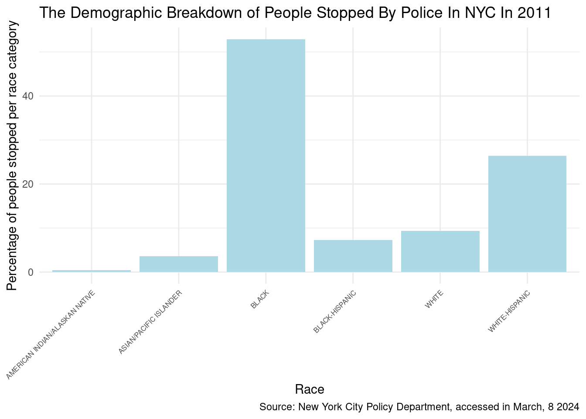
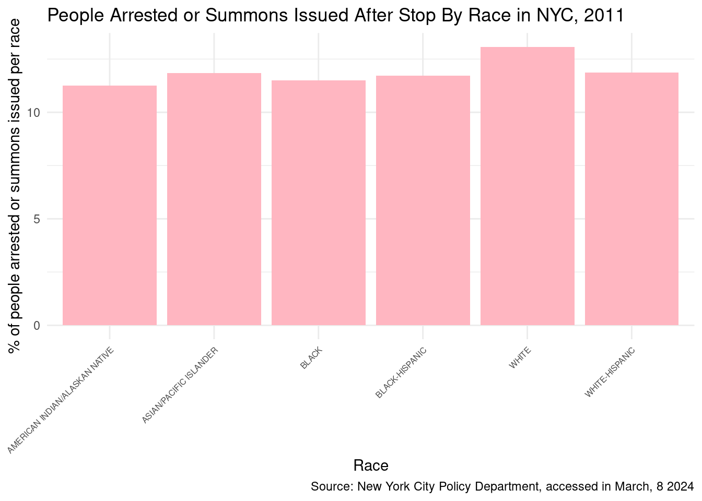

sqf_2011 <-
sqf_2011 |>
#Add a variable for weapon found
mutate(wpnfound = case_when(pistol == 1 |
riflshot == 1 |
asltweap == 1 |
knifcuti == 1 |
machgun == 1 |
othrweap == 1 ~ 1,
TRUE ~ 0))
sqf_2011 <-
sqf_2011 |>
#Add a variable for arrest made or summons issued
mutate(arrestsumm = case_when(sumissue == 1 |
arstmade == 1 ~ 1,
TRUE ~ 0))Stop, Question and Frisk 2011 Data Analysis
In this example I use Stop, Question and Frisk 2011 Data from the New York Police Department to get information if there is possible discrimination by police officers in the way they stop citizens.
I add two new columns. The first should indicate whether a weapon was found, and the second should indicate whether an arrest/summons was made.
Select the variables needed
sqf_2011 <-
sqf_2011 |>
select(frisked, arrestsumm,arstmade, wpnfound, race_cat, age)Calculating the number of steps
total_stops <-
sqf_2011 |>
summarize(Count = n()) |>
pull()
total_stops[1] 685724How many stops were there per race in 2011? What percentage of stops per race in 2011? Arrange by number of stops in descending order
total_stops_race_recorded <-
sqf_2011 |>
#Subset to rows where race_cat is not NA or "OTHER"
filter(race_cat != is.na(race_cat) & race_cat != "OTHER") |>
summarize(Count = n()) |>
pull()
sqf_2011_stops <-
sqf_2011 |>
#Subset to rows where race_cat is not NA or "OTHER"
filter(race_cat != is.na(race_cat) & race_cat != "OTHER") |>
#Group by race
group_by(race_cat) |>
#Calculate number of observations
summarize(stops = n(),
percent_stops = n() / total_stops_race_recorded * 100) |>
#Sort by stops in descending order
arrange(desc(stops)) pct is an abbreviation for percent
total_stops_race_recorded <-
sqf_2011 |>
#Subset to rows where race_cat is not NA or "OTHER"
filter(race_cat != is.na(race_cat) & race_cat != "OTHER") |>
summarize(Count = n()) |>
pull()
sqf_2011_analysis <-
sqf_2011 |>
#Subset to rows where race_cat is not NA or "OTHER"
filter(race_cat != is.na(race_cat) & race_cat != "OTHER") |>
#Group by race
group_by(race_cat) |>
#Calculate number of observations
summarize(stops = n(),
pct_stops = n() / total_stops_race_recorded * 100,
pct_frisked = sum(frisked)/stops*100,
pct_wpnfound = sum(sqf_2011$wpnfound, na.rm = TRUE)/stops*100,
pct_arrestsumm = sum(arrestsumm)/stops*100) |>
#Sort by stops in descending order
arrange(desc(stops))
sqf_2011_analysis |>
kable()| race_cat | stops | pct_stops | pct_frisked | pct_wpnfound | pct_arrestsumm |
|---|---|---|---|---|---|
| BLACK | 350743 | 52.8930792 | 57.85575 | 2.237821 | 11.50501 |
| WHITE-HISPANIC | 175302 | 26.4360588 | 56.69816 | 4.477416 | 11.87437 |
| WHITE | 61805 | 9.3203763 | 44.23752 | 12.699620 | 13.07176 |
| BLACK-HISPANIC | 48438 | 7.3045933 | 58.46649 | 16.204220 | 11.71188 |
| ASIAN/PACIFIC ISLANDER | 23932 | 3.6090162 | 47.05833 | 32.797092 | 11.84189 |
| AMERICAN INDIAN/ALASKAN NATIVE | 2897 | 0.4368761 | 49.36141 | 270.935451 | 11.25302 |
I chose this piece for data wrangling because I felt it gave me information about an important; discrimation.I learned that drivers in New York City are stopped and frisked by police officers disproportionately based on their race. An excessive amount of Black individuals and White Hispanic individuals in New York are stopped by the police compared to other race categories such as white and American Indian/Alaskan Native.
The races have similar percentage of people in each race arrested or a summoned issued which means that there might be discrimination involved. This implies that in order to prevent police officers from discriminating against certain marginalised groups because of their own biases, the NYC Police Department needs to implement stricter and more uniform policies. I was also able to create visualizations that show this.

